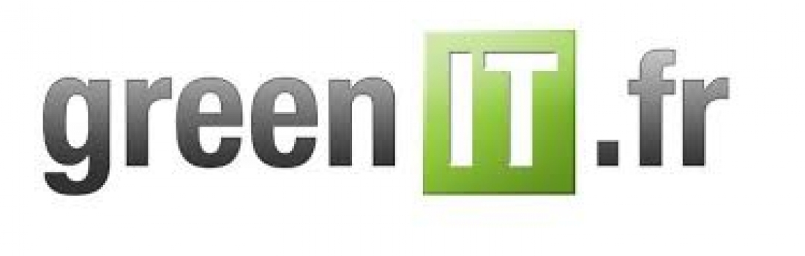

Exemple de page ultra green Qu'est ce que le green IT ? Tu crois que je vais répondre ici? C'est pas très green de réécrire une information qui est déjà écrite quelque part alors je te propose d'aller sur ces site de référence :
Les outils et sites indispensables le site historique de référence  greenit.fr Tu veux apprendre à comme un green lover? Apprends déjà les bonnes pratiques ! w3c.org Tu veux savoir combien de pinguins et de Greta ton site peut tuer ? Télécharge cette extension développée par un génie du green IT Penguin Data Calculator En vrai le mieux ça aurait été de ne pas faire de CSS du tout, mais un peu de respect pour nos yeux tout de même... Site que vous pouvez apprécier sans pub, mais offrez moi un café :p !
1 café 2 cafés 3 cafés (mon estomac vous remercie) !!Tiens un café!!